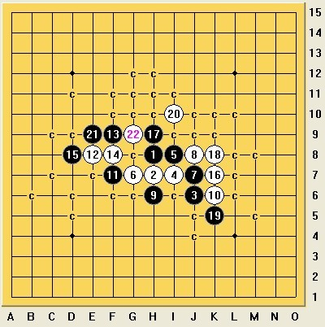

谁知道这个白怎么下啊
#1 谁知道这个白怎么下啊 作者：高星 发表时间：2009-11-21 17:58:42
=======上图对应的爱五子棋谱代码如下，以便你拆解：========
h8h7j6i7i8g7j7j8h6k6f7e8f9f8d8k7h9
======================================================
#2 Re:谁知道这个白怎么下啊 作者：茗弈小刀 发表时间：2009-11-21 18:33:21
=======上图对应的爱五子棋谱代码如下，以便你拆解：========
h8h7j6i7i8g7j7j8h6k6f7e8f9f8d8k7h9h10a1j5
======================================================
#3 Re:谁知道这个白怎么下啊 作者：wd1988 发表时间：2009-11-21 19:37:48
楼上的20，看不懂啥意思（如果18手落在20点那是必败的）。。。以下是我的看法
=======上图对应的爱五子棋谱代码如下，以便你拆解：========
h8h7j6i7i8g7j7j8h6k6f7e8f9f8d8k7h9k8k5i10e9g9g11f10h10h11j9m8k9l9
======================================================
21是黑石选最强点，结果验证是必败，囧

 1.rar
1.rar［ 慎独 于 2009-11-22 12:46:32 时花20金币送鲜花一朵］
［ 慎独 于 2009-11-22 12:46:44 时花20金币送鲜花一朵］
［ 慎独 于 2009-11-22 12:46:55 时花20金币送鲜花一朵］
#4 Re:谁知道这个白怎么下啊 作者：茗弈小刀 发表时间：2009-11-21 22:45:49
#5 Re:谁知道这个白怎么下啊 作者：高星 发表时间：2009-11-21 22:59:10
 嘻哈老师的18最好 3可有
嘻哈老师的18最好 3可有
#6 Re:谁知道这个白怎么下啊 作者：米 发表时间：2009-11-22 6:42:16
=======上图对应的爱五子棋谱代码如下，以便你拆解：========
h8h7j6i7i8g7j7j8h6k6f7e8f9f8d8k7k8
======================================================
=======上图对应的爱五子棋谱代码如下，以便你拆解：========
h8h7j6i7i8g7j7j8h6k6f7e8f9f8d8k7l6k9k8l9j9i11
======================================================
关于楼主这个变化，白16后如图一黑17只此一手唯一防，其余任何走法都是黑必败。一路强变化就是3楼摆出的（3楼虽只摆了一个黑21但其它黑21也都必败），另一路如图二，白22左右逢源，黑唯一的活二攻不起来，防又防不住。
［ 慎独 于 2009-11-22 12:47:08 时花20金币送鲜花一朵］
［ 慎独 于 2009-11-22 12:47:32 时花20金币送鲜花一朵］
［ 慎独 于 2009-11-22 12:47:43 时花20金币送鲜花一朵］
#7 Re:谁知道这个白怎么下啊 作者：茗弈求学 发表时间：2009-11-22 12:44:15
楼上老师意思楼主的17是败.那么还想请教老师们
=======上图对应的爱五子棋谱代码如下，以便你拆解：========
h8h7j6i7i8g7j7j8h6k6f7e8f9f8d8k7j5
======================================================这个17怎么杀?
#8 Re:Re:谁知道这个白怎么下啊 作者：米 发表时间：2009-11-22 13:34:04
=======上图对应的爱五子棋谱代码如下，以便你拆解：========
h8h7j6i7i8g7j7j8h6k6f7e8f9f8d8k7j5k9k8i9
======================================================
=======上图对应的爱五子棋谱代码如下，以便你拆解：========
h8h7j6i7i8g7j7j8h6k6f7e8f9f8d8k7k5i9h10k9
======================================================
回答楼上：楼主摆的17的确必败，17只有一个点不必败。楼上问的17杀法如图一，但我怀疑楼上点错位置本想问图二的17（因为楼上问的那个17不合棋理），那杀法如图二。
［ 茗弈宽容 于 2009-11-22 13:45:18 时花20金币送鲜花一朵］
#9 Re:谁知道这个白怎么下啊 作者：茗弈求学 发表时间：2009-11-22 13:41:46
 谢谢老师指点
谢谢老师指点
#10 Re:谁知道这个白怎么下啊 作者：wd1988 发表时间：2009-11-22 19:54:31
哈哈，我懂意思，求学的17是八卦点，米老师认为不合棋理，但是看上去真的蛮"好看"的，嘿嘿
而且我很想请教米老师，我那一路的其他21如何地毯？
=======上图对应的爱五子棋谱代码如下，以便你拆解：========
h8h7j6i7i8g7j7j8h6k6f7e8f9f8d8k7h9k8k5i10i9
======================================================
=======上图对应的爱五子棋谱代码如下，以便你拆解：========
h8h7j6i7i8g7j7j8h6k6f7e8f9f8d8k7h9k8k5i10h10
======================================================
真的好麻烦。。。谢谢了
［ 茗弈小刀 于 2009-11-22 22:47:29 时花20金币送鲜花一朵］
#11 Re:Re:谁知道这个白怎么下啊 作者：米 发表时间：2009-11-23 1:09:28
=======上图对应的爱五子棋谱代码如下，以便你拆解：========
h8h7j6i7i8g7j7j8h6k6f7e8f9f8d8k7h9k8k5i10i9j9l7j10k9e9
======================================================
=======上图对应的爱五子棋谱代码如下，以便你拆解：========
h8h7j6i7i8g7j7j8h6k6f7e8f9f8d8k7h9k8k5i10h10l7j9l6
======================================================
回复楼上：楼主17的其它变化如上。图一中白26先盖冲，黑防左上则右上杀，防右上则左上捉d11的三三禁。图二中白24后黑无论如何冲白都有反。另外如果黑21走h11白22位置和图二相同。
［ wd1988 于 2009-11-23 9:04:09 时花20金币送鲜花一朵］
#12 Re:谁知道这个白怎么下啊 作者：wd1988 发表时间：2009-11-23 9:04:46
很好，很强大！谢谢米老师